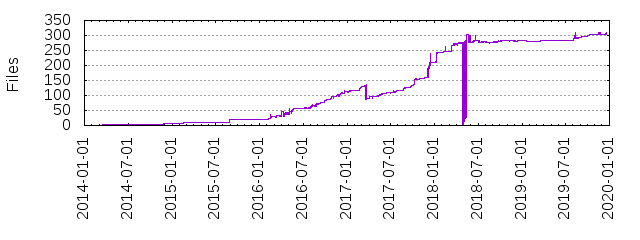

Files
- Total files
- 282
- Total lines
- 39481
- Average file size
- 18517.22 bytes

| Extension | Files (%) | Lines (%) | Lines/file |
|---|
| 46 (16.31%) | 1202 (3.04%) | 26 |
| base-tests | 1 (0.35%) | 117 (0.30%) | 117 |
| cfg | 1 (0.35%) | 39 (0.10%) | 39 |
| conf | 2 (0.71%) | 13 (0.03%) | 6 |
| default | 2 (0.71%) | 12 (0.03%) | 6 |
| dict | 2 (0.71%) | 126 (0.32%) | 63 |
| docs | 1 (0.35%) | 2 (0.01%) | 2 |
| dot | 1 (0.35%) | 88 (0.22%) | 88 |
| ex1 | 15 (5.32%) | 15 (0.04%) | 1 |
| ex2 | 8 (2.84%) | 8 (0.02%) | 1 |
| ex3 | 4 (1.42%) | 4 (0.01%) | 1 |
| ex4 | 3 (1.06%) | 3 (0.01%) | 1 |
| ex5 | 1 (0.35%) | 1 (0.00%) | 1 |
| freeradius | 1 (0.35%) | 18 (0.05%) | 18 |
| gauge | 1 (0.35%) | 13 (0.03%) | 13 |
| hostapd | 1 (0.35%) | 22 (0.06%) | 22 |
| html | 1 (0.35%) | 10 (0.03%) | 10 |
| install | 3 (1.06%) | 10 (0.03%) | 3 |
| jpg | 2 (0.71%) | 8283 (20.98%) | 4141 |
| json | 7 (2.48%) | 4882 (12.37%) | 697 |
| pi | 4 (1.42%) | 60 (0.15%) | 15 |
| pi-gauge | 1 (0.35%) | 13 (0.03%) | 13 |
| png | 9 (3.19%) | 5812 (14.72%) | 645 |
| postinst | 2 (0.71%) | 110 (0.28%) | 55 |
| py | 70 (24.82%) | 26931 (68.21%) | 384 |
| rst | 33 (11.70%) | 4282 (10.85%) | 129 |
| service | 5 (1.77%) | 75 (0.19%) | 15 |
| sh | 25 (8.87%) | 552 (1.40%) | 22 |
| test-host | 1 (0.35%) | 19 (0.05%) | 19 |
| tests | 1 (0.35%) | 18 (0.05%) | 18 |
| txt | 6 (2.13%) | 55 (0.14%) | 9 |
| yaml | 16 (5.67%) | 587 (1.49%) | 36 |
| yml | 6 (2.13%) | 179 (0.45%) | 29 |